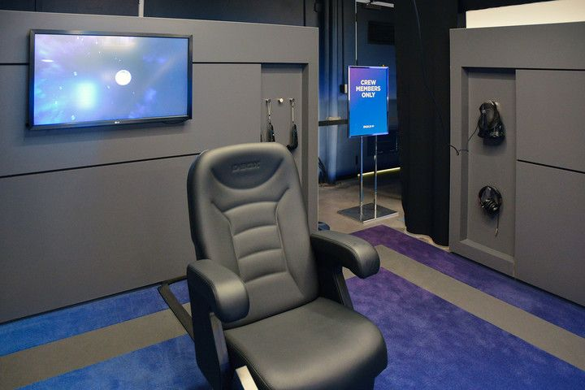
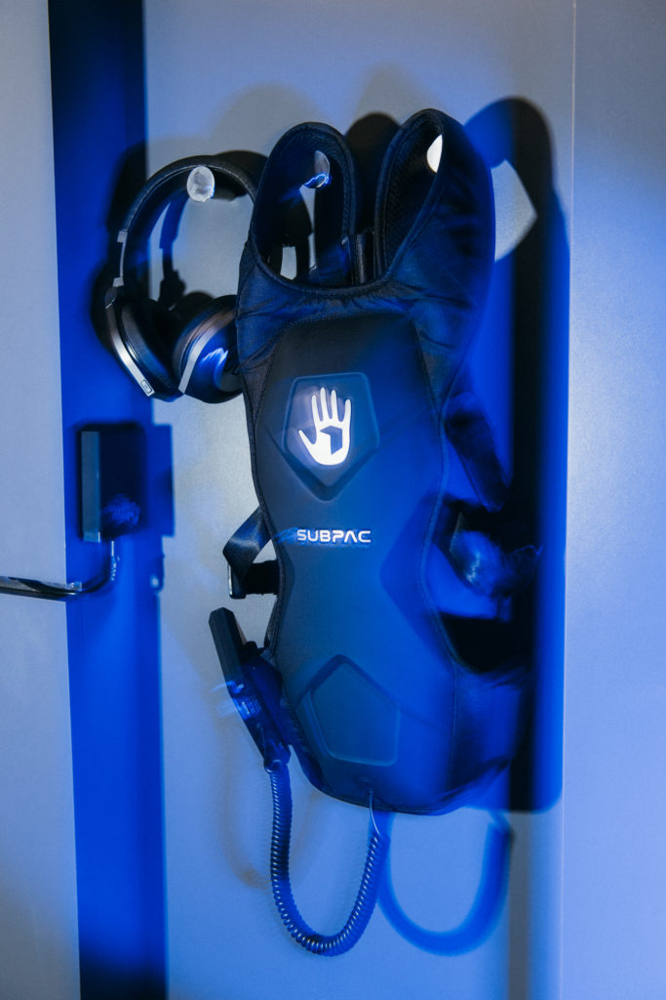

Improving the DMR (digital remastering) technology constantly (well over 10 years put in use)
Originally film had issues of film grain, but not digital has issues of electronic noise, improving to reduce this
Improving projectors and cameras (such as attempting to reduce size allowing for more versatility)
Looking to expand into VR
Announced a $50 million funding for VR content and experiences over the next 3 years
Partnered with Google to build a VR camera, with plans to launch in 2018
Partnered with Acer and Starbreeze to build a headset with a higher resolution and wider field of view to produce a headset that is the most immersive product on the market
Built a VR center in LA called the IMAX VR Experience Centre:
14 isolated pods that have physical controllers, DBOX cinema chair, vibration-emitting subpac vest, HTC Vives and StarVR
One can purchase specially curated experiences or ‘samples’ of multiple experiences. Many of these experiences connect to movies that you see today
Although there are heavy investments applied towards VR Technology, the future of the IMAX experience is still too early to tell. As technology evolves and expands so does the vision of IMAX.

a pod in the IMAX VR Experience Centre

vibration-emitting subpac vest